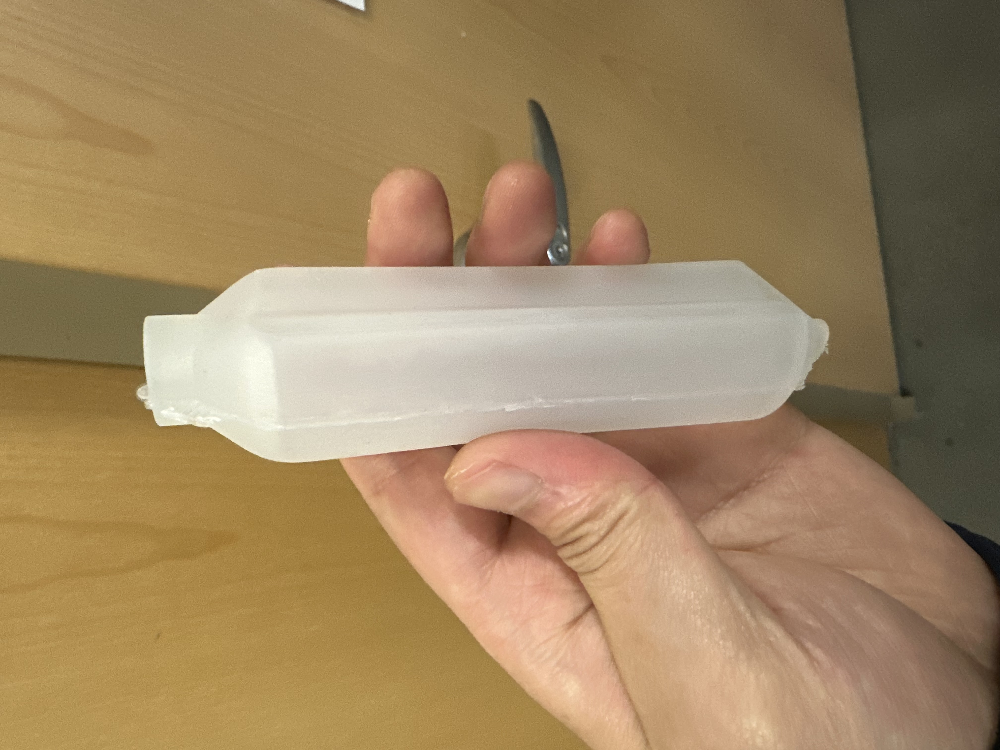
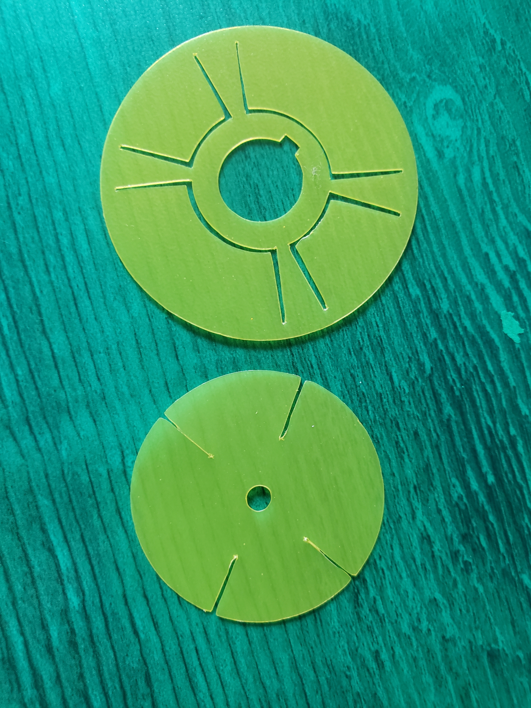

Cephalobot — Soft Robotic Squid
Robotics · Soft Actuation · Pneumatics · Manufacturing


Role & Timeline
Robotics Engineer — Cephalobot
Aug 2025 – Present
Primary focus: full mechanical scope — check valve & bladder fabrication, CAD & structural design, and fluid/pneumatic system design. Led iterative prototyping cycles from CAD to molded silicone bladders and manufactured check valves used in the jet-propulsion system.
Project Summary (resume blurb)
Part of Soft Robotics course, studying swim mechanics and biomimicry to design a 6" long squid soft robot for a race. Worked as part of a 4-person team to design, 3D print molds, cast silicone body and bladder, and manufacture check valves. Utilized bistable geometry to design silicone air bladder, control inflation with Arduino to achieve jet propulsion.
Key Subsystems & My Contributions
1. Pneumatic Bladder Design
Designed the internal bladder geometry to maximize stroke volume while keeping wall thickness uniform for reliable molding. Iterated bladder shapes to tune thrust per cycle and retraction behavior using silicone shore A rated materials. Worked closely with the team to define vents, fill ports, and mounting features for quick replacement in the field.
2. Check Valve Fabrication
Developed 3D-printed valve bodies and tested multiple flap geometries to reduce leakage and pressure loss. Validated designs on the bench with pressure sensors and flow meters, selecting the configuration with the best balance of low forward resistance and rapid sealing.
3. Structural & CAD Work
Modeled the outer shell and internal ribs in SolidWorks for waterproofing and manufacturability. Designed mounting bosses for pneumatic fittings and ensured the assembly could be machine- or 3D-printed at the lab with minimal post-processing.
Manufacturing & Testing
Used 3D printing for molds, silicone casting for bladders, and manual assembly for valves. Performed bench tests measuring thrust, duty cycle, and repeatability. Collected data across multiple bladder geometries to produce the final design used in the competition prototype.
Files & Downloads
Outcome
The final Cephalobot prototype demonstrated controllable jet-based thrust and reliable bladder performance over repeated cycles. The check valves and bladder manufacturing process established a repeatable workflow for future iterations and competitions.
Notes: All images on this page are placeholders — replace assets/images/cephalobot_*.png with your real photos and renders. The page is designed to match the style used by your other project pages.